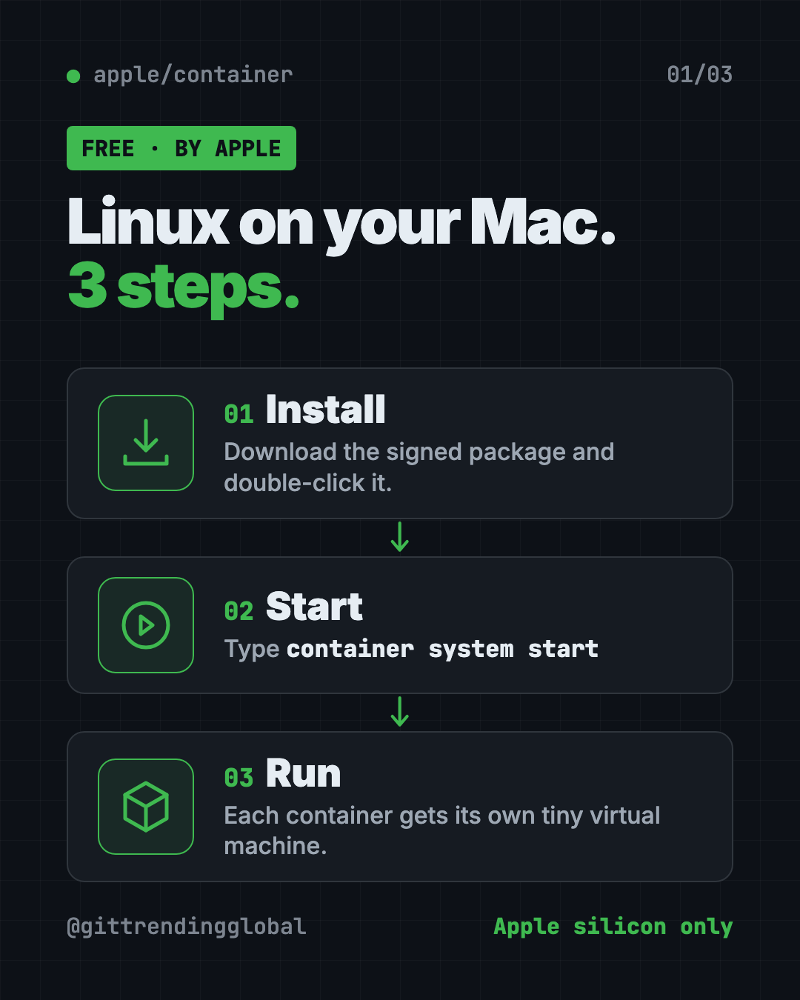
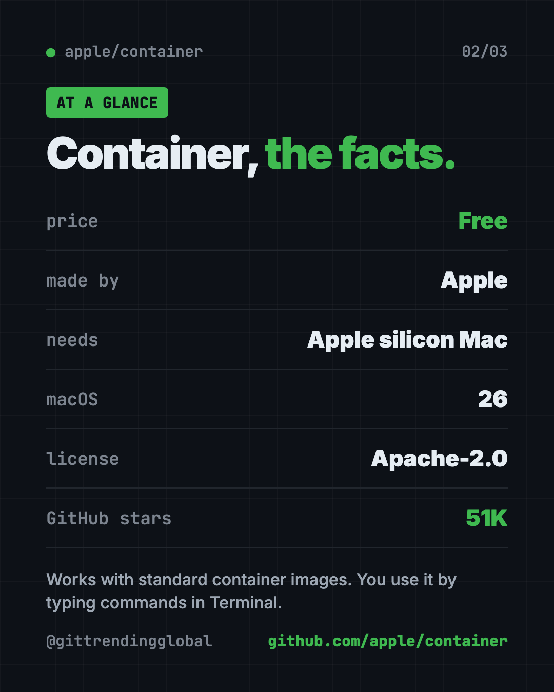
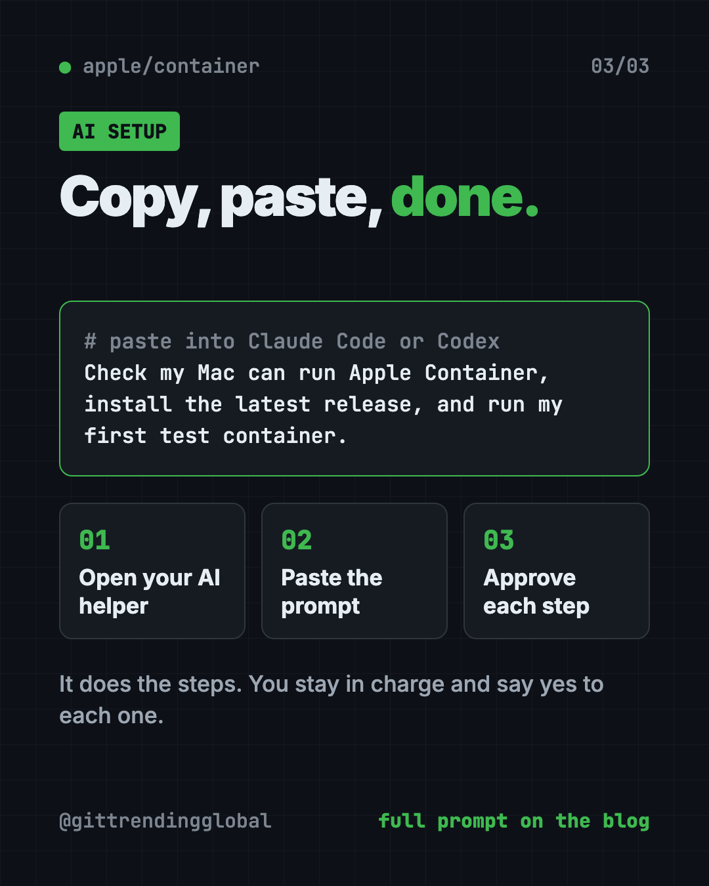

Apple Container: Run Linux Containers on Mac for Free
- Published 15 Oct 2026
- Updated 16 Oct 2026
- 7 min read
- License Apache-2.0
- By the ITG Now team
In this guide (11)
Want to run Linux containers on Mac without a big background app? Apple Container is Apple's own free, open-source tool for exactly that. Each container runs in its own tiny virtual machine, tuned for Apple silicon.
This guide explains what that means in plain words, shows real ways to use it, and walks you through the official install. You will also get a ready prompt so an AI helper can set it up for you.
Key takeaways
- Made by Apple, free and open source. The license is Apache-2.0.
- Each container gets its own light virtual machine. A virtual machine is a small pretend computer inside your real one.
- Works with standard images. You can pull from normal container libraries and push your own back.
- Needs an Apple silicon Mac on macOS 26. Intel Macs and older macOS versions are not supported.
- Command line only. You type commands in Terminal. There is no point-and-click window.
What is Apple Container?
Lots of modern software ships in "containers." A container is like a sealed lunchbox for an app. It holds the app and everything it needs, so it runs the same on any computer.
The catch is that most containers are built for Linux, not macOS. So if you want to run Linux containers on Mac, you need a helper.
Apple Container is that helper, made by Apple. The README describes it as a tool to "create and run Linux containers as lightweight virtual machines on your Mac." It is written in Swift, Apple's own programming language.
It works with OCI images. OCI is the shared standard for container files. In plain words, the image files you already find in public container libraries work here too. And images you build here work in other standard container tools.
On GitHub it has about 51K stars. Stars are like bookmarks, so many developers are watching it.

How to use Apple Container (real examples)
Here are everyday ways people use it, based on the official tutorial and how-to guides.
- Test a website on your laptop. The tutorial has you build a small web server image and run it in the background. Then you open it from your Mac.
- Try an open-source tool without messing up your Mac. Many apps ship as container images. Run one, try it, and delete it when you're done.
- Learn how servers work. Students can run a real Linux system in seconds and practice commands safely.
- Share your work. Build an image of your project and push it to a container library, so teammates can run the exact same thing.
- Keep a Linux workspace around. The docs describe "container machines": Linux setups that keep your files when you stop and start them.
💡 Tip: Start with the official "start here" tutorial in the repo. It builds, runs and publishes a tiny web server, step by step.
Is Apple Container free?
Yes. It costs nothing and the code is open under the Apache-2.0 license. That means you can use it, change it and even use it at work, as long as you keep the license notices.
The README does not mention any paid plan. Most public container images you download are free too.
Does it work on my Mac?
Only if you have two things:
- A Mac with Apple silicon. That means an M-series chip.
- macOS 26. The README says it uses new virtualization and networking features in that release.
The team says it does not support older macOS versions. It also says issues that cannot be reproduced on macOS 26 typically will not be fixed.
⚠️ Heads up: Intel Macs are not supported. Check your chip first: Apple menu, then About This Mac.
Apple Container at a glance
| Price | Free |
| Works offline | Yes, once your images are downloaded |
| Platforms | Mac with Apple silicon, macOS 26 |
| License | Apache-2.0 (open source) |
| Made by | Apple |
| How you use it | Commands in Terminal |
| Best for | Mac developers and students who work with Linux containers |

How to install Apple Container to run Linux containers on Mac
These are the official steps from the README.
- Download the latest signed installer package from the Releases page on github.com/apple/container.
- Double-click the package and follow the steps.
- Enter your Mac password when asked. This lets the installer put files in a system folder (
/usr/local).
Now open Terminal and start the background service. Copy and paste this:
container system start
The first time, the tutorial says it may ask to install a Linux kernel. The kernel is the core of a Linux system. Type y to say yes.
Then run your first container. Copy and paste this:
container run --rm alpine echo hello
This downloads a tiny Linux system called Alpine, runs it in a light virtual machine, prints "hello," and cleans up after itself.
Upgrade it later
Stop it first, then run the update script. Copy and paste this:
container system stop
/usr/local/bin/update-container.sh
container system start
Remove it
To uninstall but keep your data, copy and paste this:
/usr/local/bin/uninstall-container.sh -k
Use -d instead of -k to delete your data too.
⚠️ Heads up: The README says the project is under active development. Features marked "experimental," like the Kubernetes command, may change.
Let Claude or Codex set it up for you
Claude Code and OpenAI Codex are AI helpers that can run setup steps on your computer. You paste a request, it does the steps, and you approve each one.
Copy and paste this:
Please help me install Apple Container from github.com/apple/container.
1. Check that my Mac has Apple silicon and macOS 26. Stop and tell me if not.
2. Find the latest signed installer package on the Releases page and download it.
3. Install it, and explain each step before you run it.
4. Run "container system start" and help me answer the kernel question.
5. Run "container run --rm alpine echo hello" to test it.
Then try asking:
Walk me through the Apple Container "start here" tutorial and build the sample web server.
Show me which containers are running and how much memory they use.
Uninstall Apple Container but keep my data, using the official script.

What are Apple Container's limits?
- New Macs only. Apple silicon plus macOS 26, nothing older.
- No app window. Everything happens in Terminal.
- Still young. The README says release numbers are product versions, and compatibility can break between major versions.
- Upgrades need a stop. You must run
container system stopbefore upgrading or downgrading.
Our take
Apple Container is a clean, official way to run Linux containers on a Mac. Giving each container its own light virtual machine is a neat idea, and it comes straight from Apple.
What we like:
- Free, open source and made by Apple.
- Works with standard container images.
- Signed installer, plus simple upgrade and uninstall scripts.
- A friendly tutorial that teaches the basics.
- Extra guides for networking, storage, logs and more.
What to watch for:
- Only Apple silicon Macs on macOS 26.
- Command line only, which takes some learning.
- Experimental parts may change.
- If your team depends on another container app's special features, check the command reference before switching.
New to the command line? Our Mole guide is a gentle first Terminal tool for Mac. Building with an AI helper? See how Superpowers keeps AI coders on track. Apple Container also showed up in our June 8 weekly trending list.
FAQ
What is Apple Container used for?
It lets you run Linux containers on Mac computers with Apple silicon. Each container runs in its own small virtual machine, so you can test and share apps that are built for Linux.
Is Apple Container free?
Yes. It is free and open source under the Apache-2.0 license. The README lists no paid plan.
Does Apple Container work on Intel Macs?
No. You need a Mac with Apple silicon. It is also only supported on macOS 26.
Can I use normal container images with it?
Yes. It uses the OCI standard, so you can pull images from standard container libraries and push your own back.
How do I uninstall Apple Container?
Run /usr/local/bin/uninstall-container.sh -k to keep your data, or -d to delete it too.
Get Apple Container: github.com/apple/container
Latest AI news
- Meta gives away its big Muse Spark AI for free
- Anthropic puts 5% of its shares in a public fund
- World Bank bets on 'small AI' for poorer countries
- Microsoft pulls out of a UK AI data center deal
Keep reading

net-merge: Combine Wi-Fi and Phone Internet, Free
net-merge is a free app to use two internet connections at once, like Wi-Fi plus a phone hotspot, on Windows, Mac and Linux. No account or VPN.

REA: Reverse Engineer Anything With Your AI Agent
REA (Reverse Engineer Anything) lets an AI agent look inside an app and explain how a feature works, with proof. What it does, what it misses, and the risks.

DBX: Free Database Client for 100+ Databases, With AI
DBX is a free database client that opens 100+ kinds of databases in a 25 MB app. Its AI helper turns plain English into database queries for you.